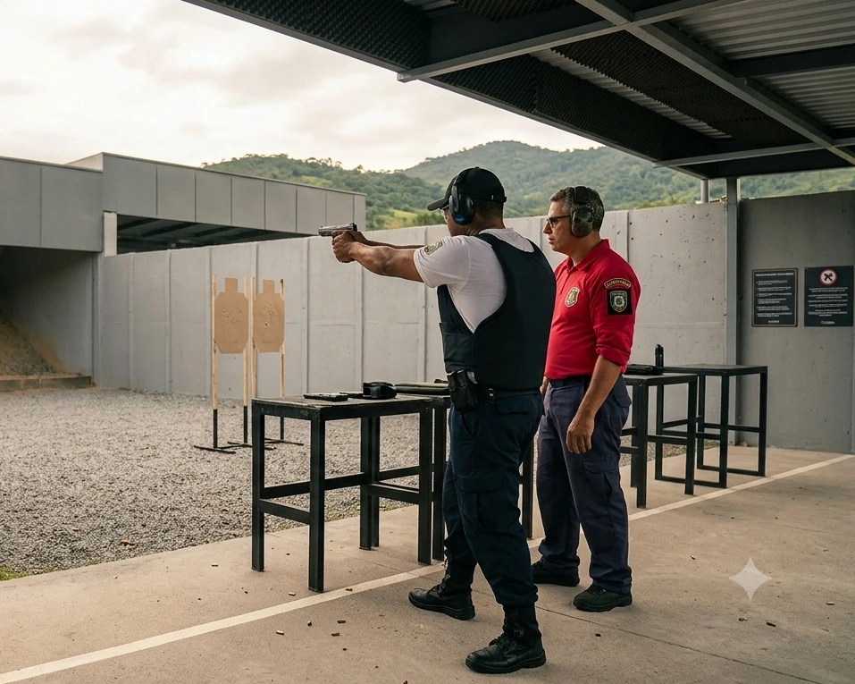
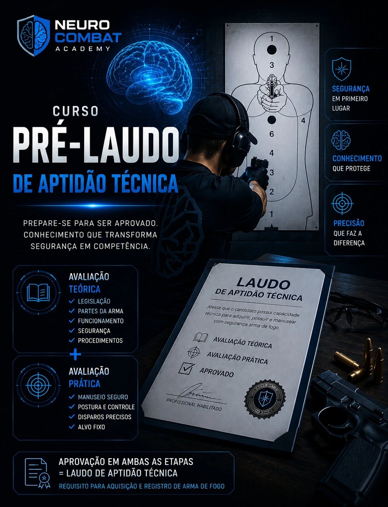
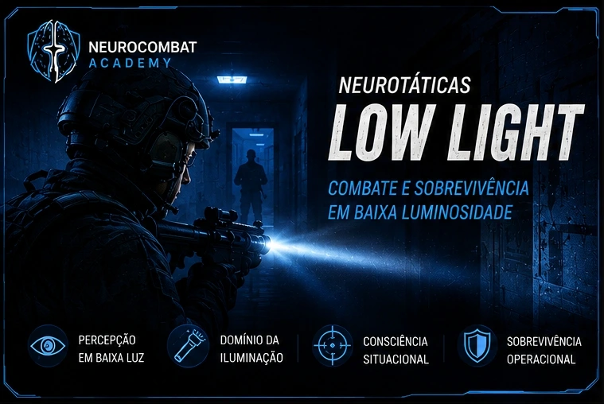
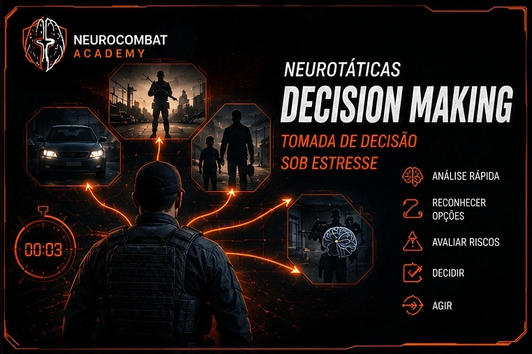
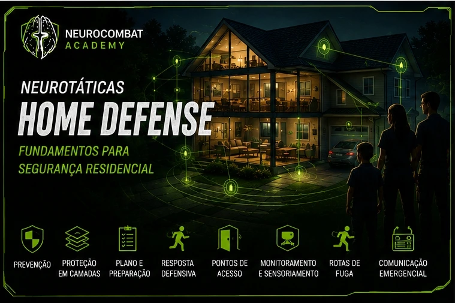
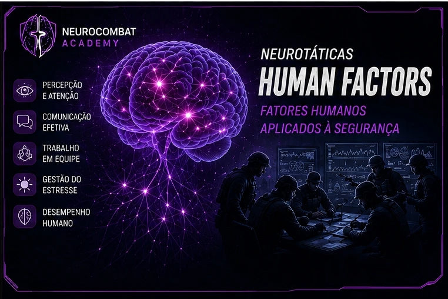

A mente é o primeiro sistema de defesa. Desenvolvemos profissionais por meio da integração entre neurociência, fatores humanos e experiência operacional, criando uma metodologia própria para desempenho em ambientes críticos.
Anos de experiência na segurança pública
Profissionais capacitados
Horas de treinamento aplicado

Instrutor de Armamento e Tiro | Especialista em Biomecânica e Psicofisiologia do Combate | Especialista em Docência em Segurança Pública
"A mente é o primeiro sistema de defesa. Nosso método prepara profissionais para decisões precisas sob pressão."
Metodologia própria que integra ciência, técnica e fatores humanos
Ciência · Técnica · Responsabilidade
Todo conteúdo baseado em pesquisas e dados concretos.
Conhecimento aplicado, testado em situações reais.
Aprendizado ao longo da vida para profissionais.
Compromisso com boas práticas e ética profissional.
Conheça nossa metodologia aplicada ao Pré-Laudo de Aptidão Técnica

O Laudo de Aptidão Técnica é o documento emitido por profissional habilitado que atesta que o candidato possui capacidade técnica para adquirir, possuir e manusear com segurança uma arma de fogo.
Para obter o laudo, o candidato deve ser avaliado em dois aspectos:
A aprovação em ambas as etapas gera o laudo que, junto com os demais documentos, permite a aquisição e o registro da arma junto ao órgão competente.
O curso Pré-Laudo de Aptidão da NeuroCombat Academy foi desenvolvido para preparar o candidato de forma completa e eficiente para essa avaliação. Não se trata apenas de decorar respostas: o objetivo é que o candidato compreenda, internalize e demonstre conhecimento técnico real.
O que profissionais dizem sobre a metodologia NeuroCombat
"A metodologia NeuroCombat transformou minha forma de atuar. Material extremamente completo e didático."
"Uma abordagem séria, baseada em ciência e experiência real. A metodologia mudou minha visão sobre segurança."
"Diferencial imenso. Aprendi muito mais com a metodologia do que em outros treinamentos que já fiz."
Desenvolvida com base em evidências científicas e experiência operacional real.
Apostilas, recursos multimídia e simulações práticas para aprendizado real.
Entendimento dos fatores humanos: percepção, decisão e desempenho sob estresse.
Formação contínua, networking e atualização constante para profissionais.
Novas aplicações da metodologia NeuroCombat baseadas em neurociência e fatores humanos

Em breveCombate e Sobrevivência em Baixa Luminosidade

Em breveTomada de Decisão sob Estresse

Em breveFundamentos para Segurança Residencial

Em breveFatores Humanos Aplicados à Segurança
Desenvolva sua capacidade de decisão com a metodologia que une neurociência, técnica e experiência operacional real.
QUERO CONHECER AGORA